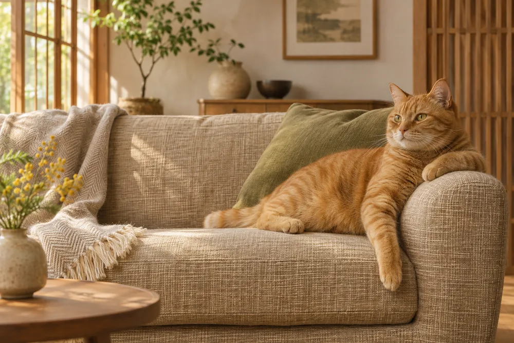

犬・猫の抜け毛掃除道具を場所別に比較
ソファ・ラグ・衣類で使い分ける道具と、購入前に確認したい素材表示や手入れを整理しました。

最大3件を選択できます。用途と注意点はメーカー資料・方式の特性に基づきます。
| 道具 | 対象 | 消耗品・手入れ | 購入前の注意 |
|---|
道具の使い分けはソファ・ラグ・衣類の抜け毛掃除グッズ比較、買い替え前の確認は粘着式と繰り返し式のローラー比較へ。
日常の手入れを始めやすい順。素材との相性と消耗品の手間で選んだ編集上の提案です。
ソファ・ラグ・衣類で使い分ける道具と、購入前に確認したい素材表示や手入れを整理しました。
ゴミの捨て方、替えテープ代、使える素材から、抜け毛掃除のローラー2方式を比べます。
替えテープの買い間違いを防ぎ、1カ月の使用量から費用を計算する方法を解説します。
道具を兼用できるか、テープの費用、短い毛足の注意など、購入前によく迷う点をまとめます。
布ソファを傷めにくい方法を選ぶため、張り地の表示から座面・縫い目の手入れを順に確認します。
使いやすさより先に張り地への適合を確認。広い面、細部、仕上げという目的別に選ぶ順番をまとめました。
短い毛足、長い毛足、輪状の表面で道具をどう選ぶか、ラグの表示から説明します。
毛足が短いほど同じ道具が使えるとは限りません。手入れ表示と、掃除後の表面の確認方法をまとめます。
袖、脇、裾を確認し、黒い服の素材に合ったブラシや粘着ローラーを選びます。
衣類用ブラシと粘着ローラーを、生地の条件、片付け、携帯性で比較します。
トレーの縦・横を測り、吸収面と1枚あたりの価格を比べます。
広告。商品リンクにはAmazonアソシエイトを利用しています。価格・在庫・仕様はAmazonでご確認ください。
断水時の備えに。家族で必要な回数と保管場所を考えておきましょう。
Amazonで詳細を確認購入前に、手持ちの本体に合う幅と内径を確認しましょう。
Amazonで詳細を確認 替えテープの幅・内径・費用の見方布地に付いた毛を集める、繰り返し使えるローラーです。
Amazonで詳細を確認 繰り返し式と粘着式のローラー比較標準サイズ（56×56cm）。トレーの内寸と商品の吸収面を比べて選びます。
Amazonで詳細を確認 トレーの測り方とサイズの選び方